Aster Valley — Supplementary Asset Gallery 25 original vehicle variants, traffic LODs, and environment GLBs. Images are projected from the triangles used to export the actual models. Open the primary asset gallery for the other 24 models. These are not Godot screenshots.
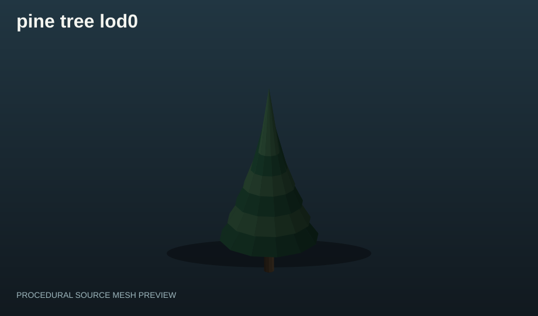
pine tree lod0 environment variant 108 triangles · environment_variant 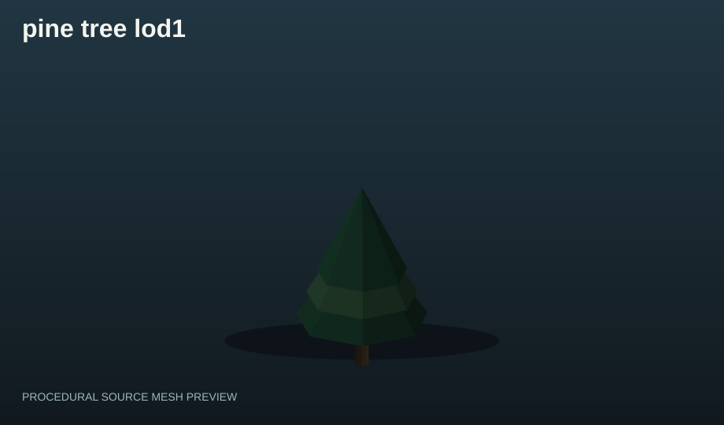
pine tree lod1 environment variant 57 triangles · environment_variant 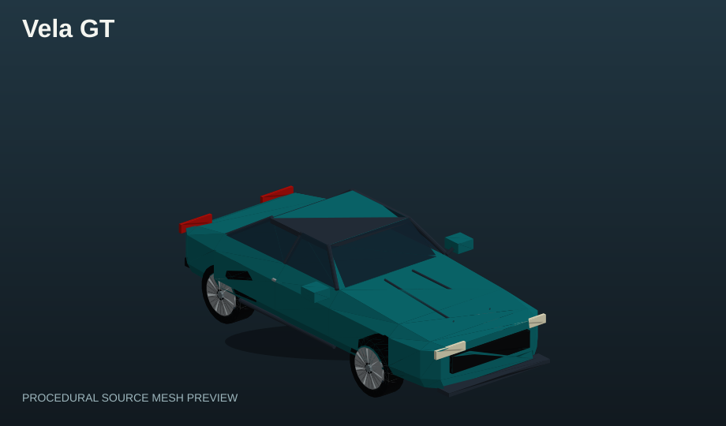
vela gt vehicle alternative 1864 triangles · vehicle_alternative 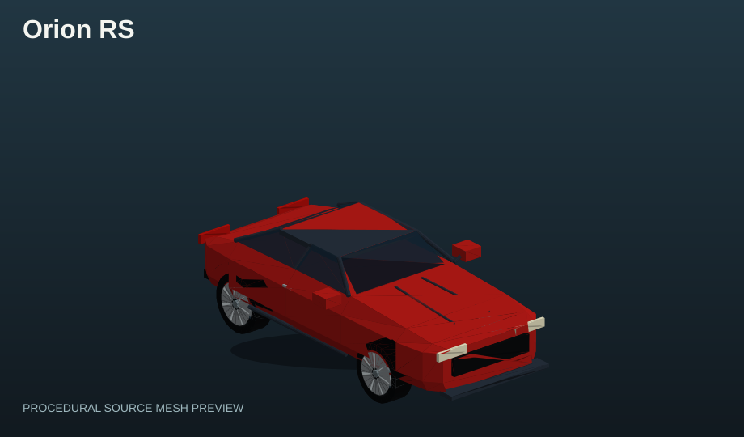
orion rs vehicle alternative 1864 triangles · vehicle_alternative 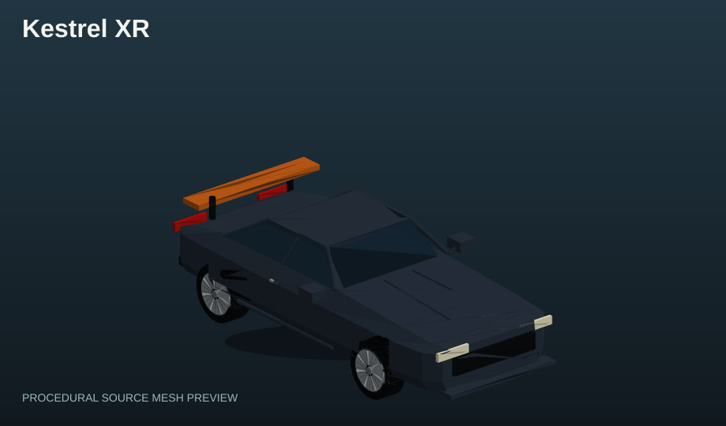
kestrel xr vehicle alternative 1948 triangles · vehicle_alternative 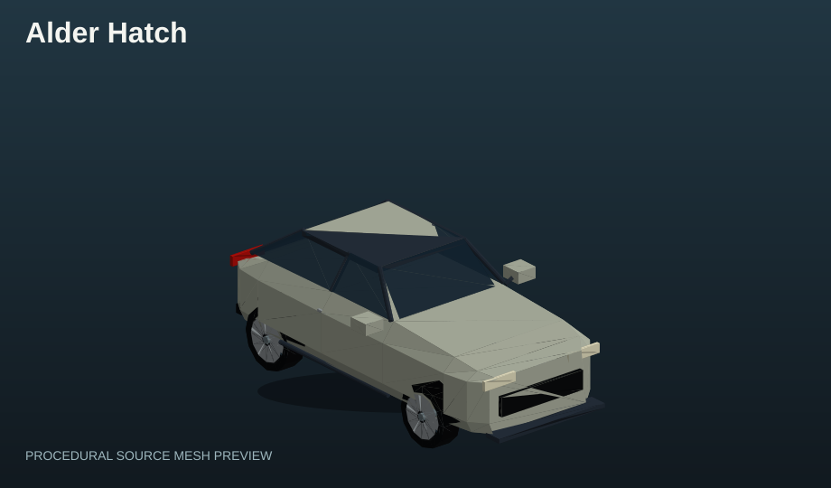
alder hatch vehicle alternative 1360 triangles · vehicle_alternative 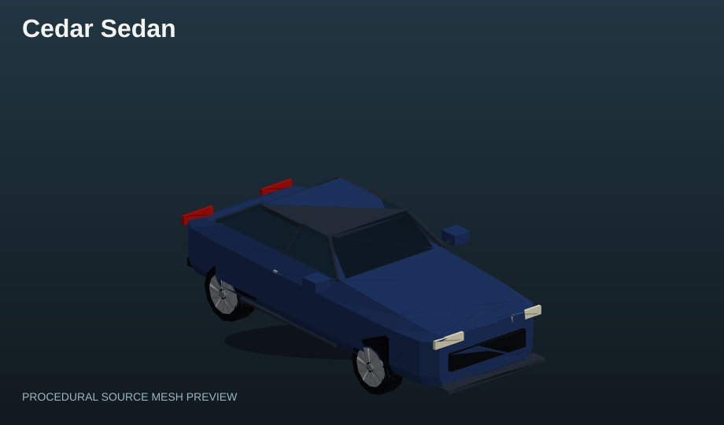
cedar sedan vehicle alternative 1360 triangles · vehicle_alternative valley wagon vehicle alternative 1360 triangles · vehicle_alternative 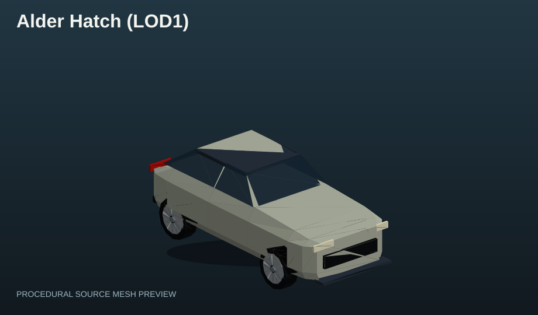
alder hatch lod1 traffic lod 952 triangles · traffic_lod 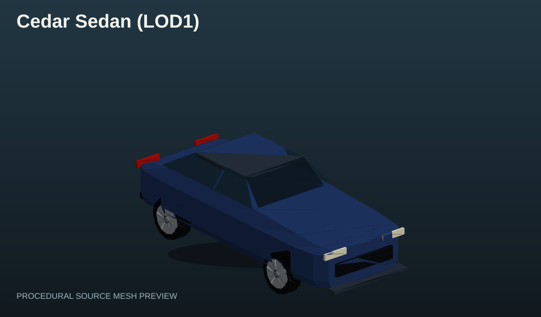
cedar sedan lod1 traffic lod 952 triangles · traffic_lod 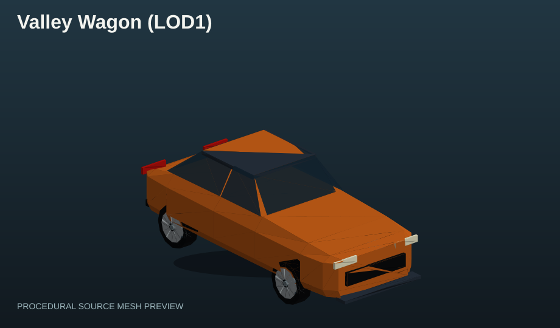
valley wagon lod1 traffic lod 952 triangles · traffic_lod 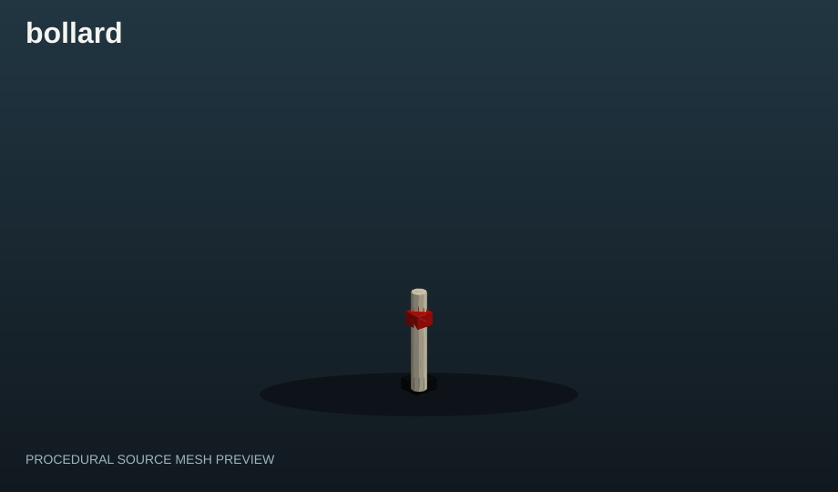
environment bollard 60 triangles · environment_variant 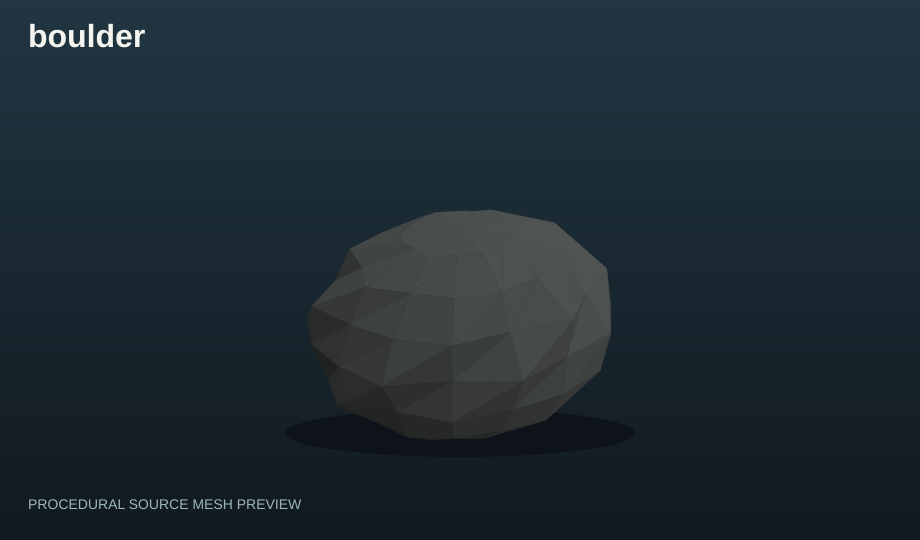
environment boulder 224 triangles · environment_variant 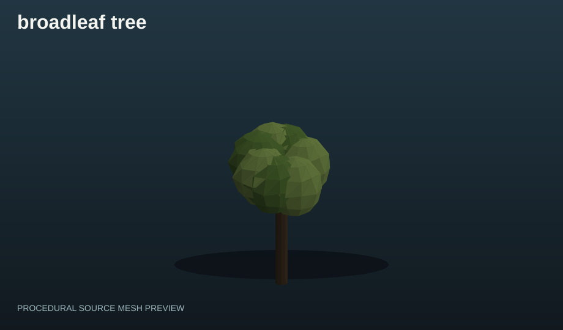
environment broadleaf tree 960 triangles · environment_variant 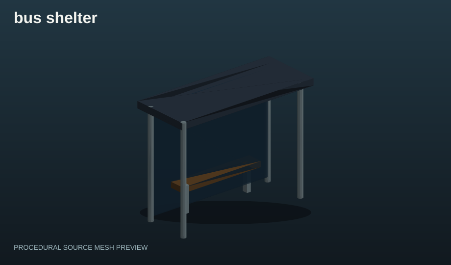
environment bus shelter 204 triangles · environment_variant 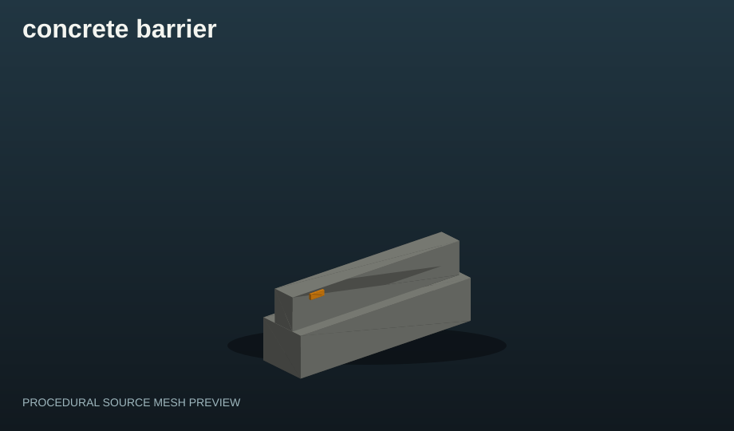
environment concrete barrier 48 triangles · environment_variant 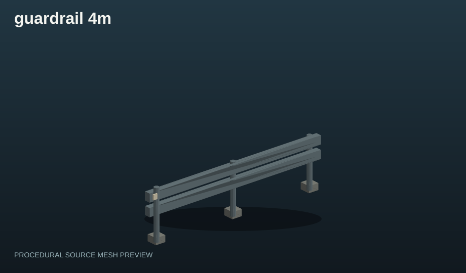
environment guardrail 4m 192 triangles · environment_variant environment hay bale 36 triangles · environment_variant 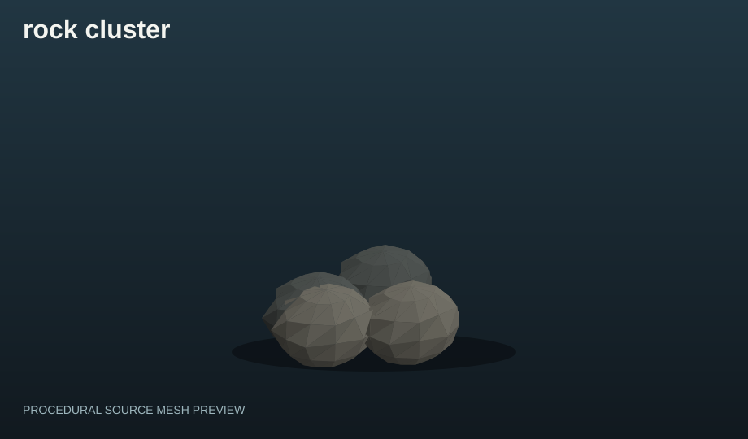
environment rock cluster 528 triangles · environment_variant environment shrub cluster 924 triangles · environment_variant 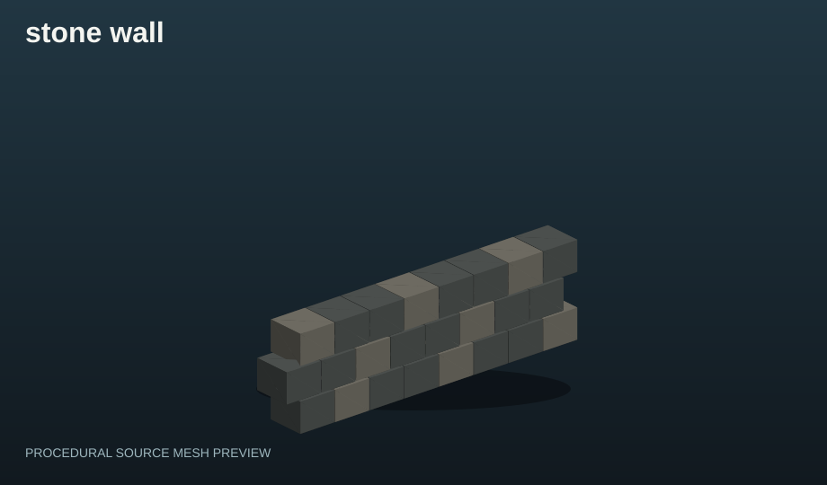
environment stone wall 288 triangles · environment_variant 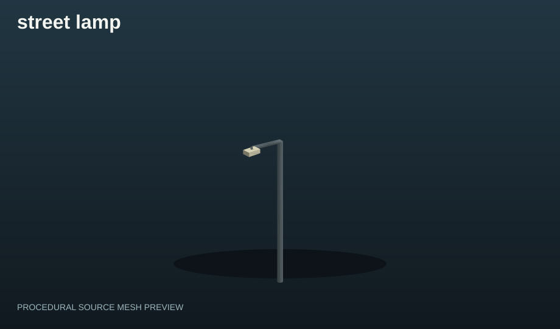
environment street lamp 84 triangles · environment_variant environment traffic cone 38 triangles · environment_variant environment warning sign 64 triangles · environment_variant 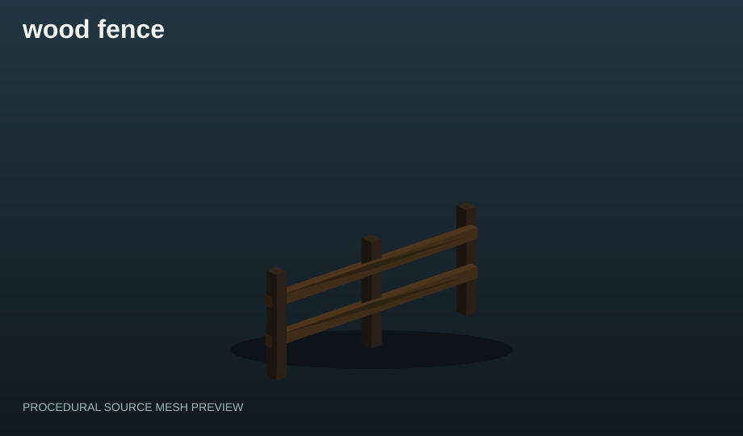
environment wood fence 60 triangles · environment_variant